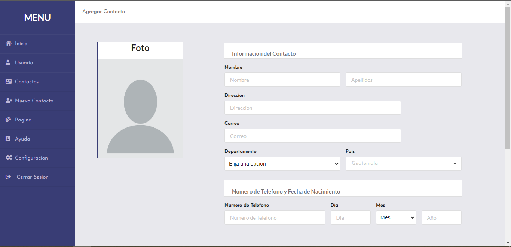
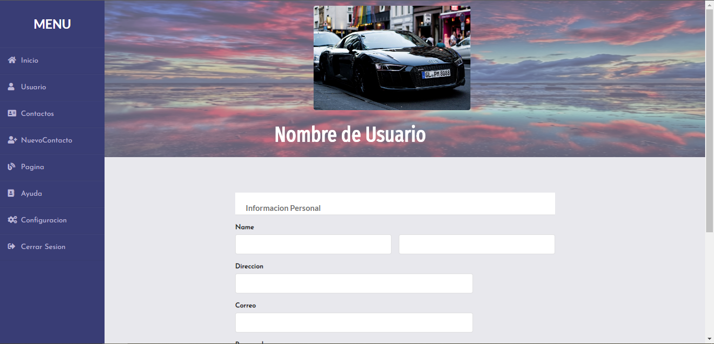
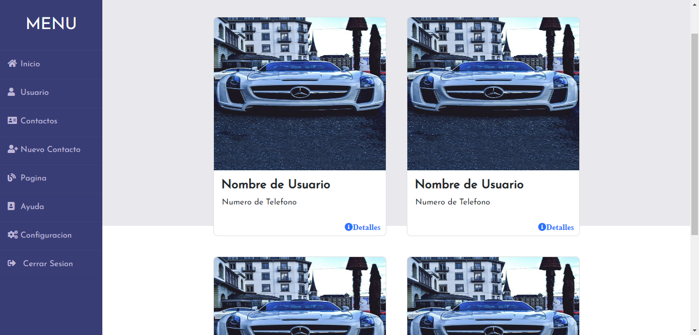

Agenda Web en HTML5 y CSS3
Fecha de Realizacion: 17/01/2020
Para la realizacion de este proyecto se utilizo HTML5 en conjunto con CSS3 y se añadieron frameworks los cuales fueron Bootstrap y Semantic UI
La funcionalidad de este proyecto no es compleja, ya que no tiene ninguna funcionalidad de respuesta por el lado del servidor, son unicamente vistas hechas atravez de HTML, cuenta con 5 vistas que estan distribuidas de la siguiente manera: una vista para el Inicio de Sesion, otra para ver los datos del peril propio, una vista donde se pueden añadir contactos, otra para ver todos los contactos guardados y una ultima para ver los datos especificos de algun contacto, cabe resaltar que si esta no es funcional puede ser reutilizada para algun desarrollo de Front-End mas complejo, ya que cuenta con formularios que pueden servir en alguna ocasion
Cuando realice este proyecto me ayudo a recordas los conocimientos que tenia sobre HTML y CSS, de esta manera tambien pude implentar partes de codigo aprendidas durante ese tiempo, anteriormente no habia utilizado ningun framework con HTML y este proyecto fue una ventaja para empezar a utilizarlos
Para acceder al proyecto ingrese al siguiente link de github Click Aqui
- 
- 
- 